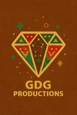

Développeur full-stack juniorWeb · Mobile · DevOps
J'analyse les besoins, je conçois des solutions performantes et j'accompagne les personnes qui les utilisent. De l'interface au pipeline de déploiement, j'aime comprendre toute la chaîne.
Six projets, du produit que je construis seul aux applications réalisées en équipe. Pour chacun : le contexte, mon rôle, ce que j'ai fait et où en est le projet.
α Bimy
Une communauté où voyageurs, expatriés, étudiants et nomades partagent ce qu'ils ont appris sur le terrain.
Solo
En cours
Produit GDG Productions
Contexte
Visas, loyers, transport, erreurs de première semaine : quand on s'installe ailleurs, les meilleures réponses viennent de ceux qui sont passés avant. Bimy rassemble ces notes pour que le prochain départ commence avec des conseils concrets.
Mon rôle
Seul sur le projet : produit, design, frontend, backend et infrastructure. Bimy est développé sous la bannière de GDG Productions.
Ce que j'ai fait
Frontend en Astro 6 avec rendu serveur (SSR), préparé pour Cloudflare Pages, et proxy d'API vers le backend.
API REST en Spring Boot 4 et Java 21 avec PostgreSQL et JPA, organisée en monolithe modulaire MVC (modules auth, post, user et webhook).
Fil de notes avec étiquettes, votes (« sparks ») et commentaires, pages de destinations et rédaction de notes.
Refonte complète de l'interface en cours : accueil, destinations et page À propos.
Interface en développement local. Les contenus et les chiffres affichés sont des données de démonstration.
Aujourd'hui et cap
Aujourd'hui
Prototype fonctionnel en développement, nouvelle interface en cours.
17 décembre 2026
Déploiement.
Prévu
Architecture frontend-first avec Astro et Supabase : base de données et routes protégées par rôle (RBAC).
Prévu
Publicités, et abonnement à 1 $ CA pour les retirer.
Ensuite
Une IA réservée aux abonnés pour poser des questions sur les publications.

β GDG Productions
Le studio web indépendant que j'ai fondé à Montréal.
Fondateur
Solo
En ligne
Du charbon brut au diamant stellaire.
Contexte
Le site du studio devait présenter l'offre de GDG Productions, porter son récit de marque et rester conforme aux règles québécoises sur les renseignements personnels.
Mon rôle
Fondateur. Conception, design et développement du site.
Ce que j'ai fait
Site en Astro 5 et TypeScript, animé au défilement avec GSAP et ScrollTrigger.
Formulaire de contact relié à une fonction serverless (Nodemailer) hébergée sur Vercel.
Gestionnaire de consentement aux témoins conforme à la Loi 25.
Référencement technique : données structurées JSON-LD, Open Graph et sitemap.
Site vitrine et interface d'administration pour une firme de conseil en hydrogéologie.
Solo
En cours
Version actuelle en ligne
Contexte
Le site présente les expertises et les projets d'une firme de conseil en hydrogéologie. Une interface d'administration permet de gérer ces projets sans toucher au code.
Mon rôle
Développement complet, frontend et backend, seul.
Ce que j'ai fait
Frontend Angular 16 en composants standalone, publié sur Firebase Hosting.
API Spring Boot 3.1 sécurisée avec Spring Security et JWT, base H2 et PostgreSQL.
Interface d'administration avec connexion pour gérer les projets et leur statut : Planification, En cours, Terminé.
État
En cours de développement. La version actuelle est en ligne. Les chiffres affichés sur le site sont ceux du client.
Technologies
Angular 16 · TypeScript · Spring Boot 3.1 · Spring Security · JWT · PostgreSQL · Firebase
Un CRM réalisé en équipe, avec des accès distincts pour les administrateurs, les parents et les animateurs.
Équipe de 4
Équipe
Tristan, Kenny, Emmanuel et moi. Les fonctionnalités métier ont surtout été développées par mes coéquipiers.
Mon rôle
Intégration continue, authentification et contrôle d'accès par rôle.
Ce que j'ai fait
Pipeline GitLab CI/CD : analyse SAST, détection de secrets, mvn verify avec rapports JUnit, construction du JAR, puis image Docker étiquetée (SHA du commit et latest) poussée vers le registre GitLab à chaque push sur main.
Authentification avec Spring Security et connexion OAuth2.
RBAC avec les rôles ADMIN, PARENT et ANIMATEUR, appliqué dans l'API et par un guard Angular sur les routes.
Technologies
Angular 21 · Spring Boot 4 · Java 21 · Spring Security · OAuth2 · MySQL · Docker · GitLab CI/CD